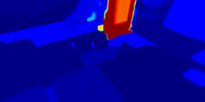

Online construction of open-ended language scenes is crucial for robotic applications, where open-vocabulary interactive scene understanding is required. Recently, neural implicit representation has provided a promising direction for online interactive mapping. However, implementing open-vocabulary scene understanding capability into online neural implicit mapping still faces three challenges: lack of local scene updating ability, blurry spatial hierarchical semantic segmentation and difficulty in maintaining multi-view consistency. To this end, we proposed O2V-mapping, which utilizes voxel-based language and geometric features to create an open-vocabulary field, thus allowing for local updates during online training process. Additionally, we leverage a foundational model for image segmentation to extract language features on object-level entities, achieving clear segmentation boundaries and hierarchical semantic features. For the purpose of preserving consistency in 3D object properties across different viewpoints, we propose a spatial adaptive voxel adjustment mechanism and a multi-view weight selection method. Extensive experiments on open-vocabulary object localization and semantic segmentation demonstrate that O2V-mapping achieves online construction of language scenes while enhancing accuracy, outperforming the previous SOTA method.We have now open-sourced our code at https://github.com/Fudan-MAGIC-Lab/O2Vmapping.git.


@inproceedings{tie20242,
title={O2V-Mapping: Online Open-Vocabulary Mapping with Neural Implicit Representation},
author={Tie, Muer and Wei, Julong and Wu, Ke and Wang, Zhengjun and Yuan, Shanshuai and Zhang, Kaizhao and Jia, Jie and Zhao, Jieru and Gan, Zhongxue and Ding, Wenchao},
booktitle={European Conference on Computer Vision},
pages={318--333},
year={2024},
organization={Springer}
}